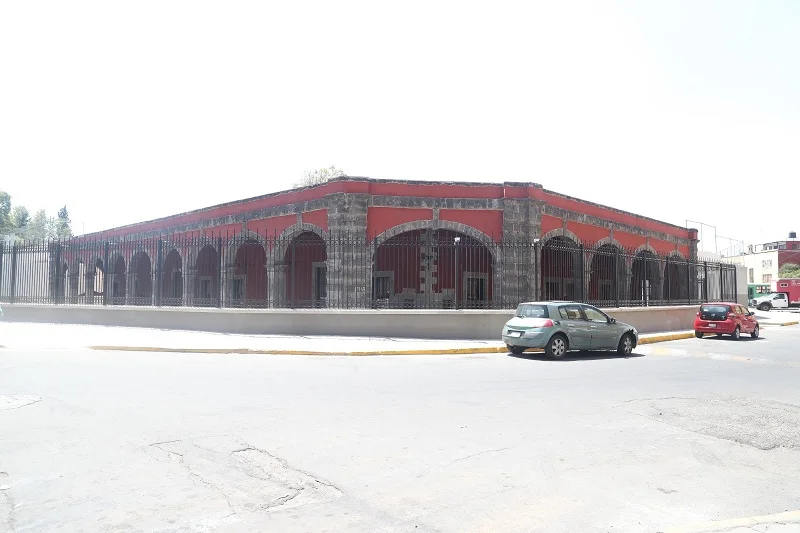
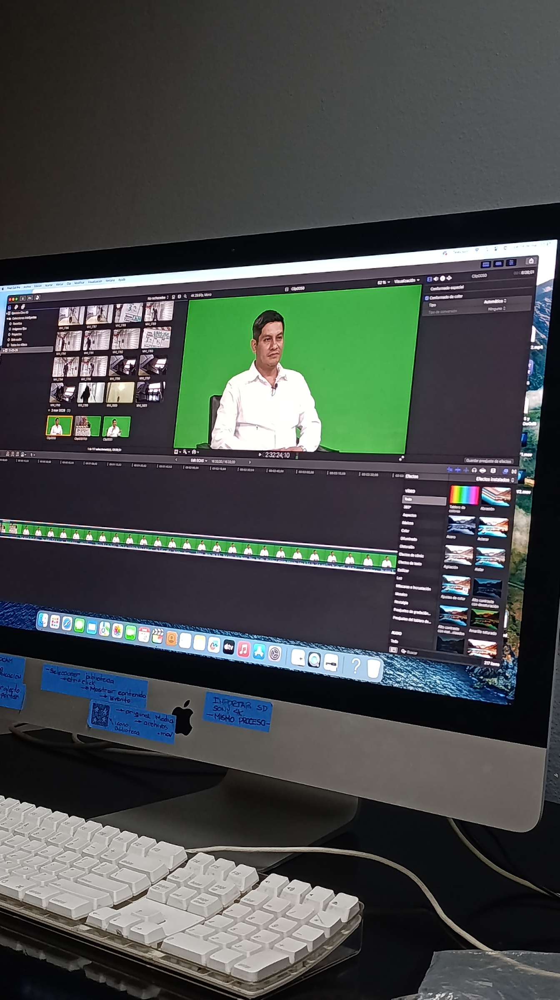
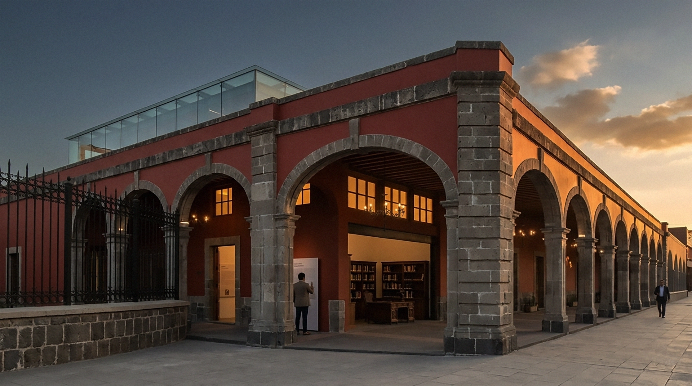
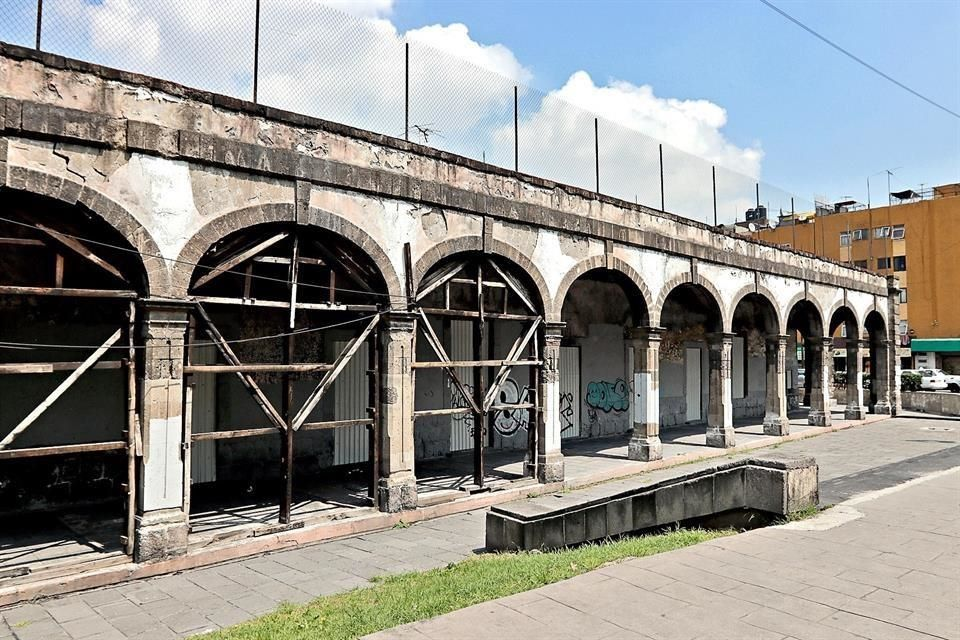

Galería






Arquitecto
Participó en la restauración de la Garita de San Lázaro, especialmente en la intervención de la fachada. Para conocer más detalles sobre este proceso, te invitamos a ver esta entrevista.
Arqueólogo del INAH
Participó en la restauración de la Garita de San Lázaro, especialmente en la búsqueda e interpretación para reconstruir la historia. Para conocer más detalles sobre este proceso, te invitamos a ver esta entrevista.
Arquitecto y Mtro. en Reutilización del Patrimonio
Participó en la restauración de la Garita de San Lázaro, especialmente en el análisis de materiales y toma de decisiones. Para conocer más detalles sobre este proceso, te invitamos a ver esta entrevista.
Escucha la historia de este maravilloso lugar y acompáñanos en este proyecto.
Un recorrido por la Garita de San Lázaro



